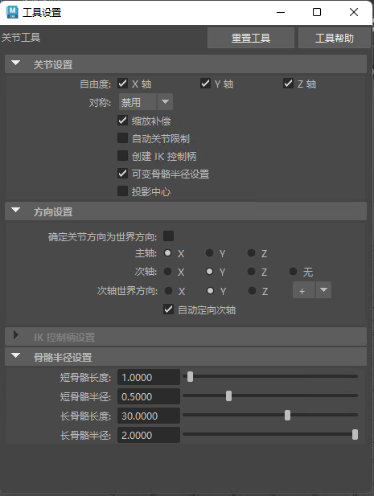
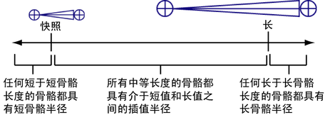

访问“关节工具”(Joint Tool)设置
本主题介绍了“关节工具”(Joint Tool)中的选项。有关创建关节的信息，请参见创建关节或关节链。

“关节”(Joint)设置
-
自由度
-
指定关节可以在反向运动学造型期间围绕该关节的哪个局部轴进行旋转。单击“X”、“Y”或“Z”。默认设置允许关节在 IK 造型期间围绕所有三个局部轴进行旋转。
-
对称(Symmetry)
- 可以在创建关节时启用或禁用对称。通过以下选项，可以指定创建对称连接时其具有的轴：
-
禁用(Off)
- 默认情况下，对称处于禁用状态，且“关节工具”(Joint Tool)处于法线关节创建模式。
-
X 轴(X-axis)
- 沿 X 轴镜像关节。
-
Y 轴(Y-axis)
- 沿 Y 轴镜像关节。
-
Z 轴(Y-axis)
- 沿 Z 轴镜像关节。
-
比例补偿(Scale compensate)
-
该选项启用时，如果在您创建的关节上方缩放骨架层次中的关节，则您创建的关节将不会自动缩放。默认设置为启用。
“比例补偿”(Scale Compensate)可以防止将角色蒙皮并决定沿其一个或两个轴缩放关节之后出现不需要的斜切效果。此外，它还允许轻松更改各个骨骼的长度。
-
自动关节限制(Auto joint limits)
-
该选项启用时，Maya 可根据构建骨架关节时的角度自动限制关节围绕其轴旋转的范围。此外，如果关节的较小内部角度四舍五入至 180 度，则该角度将设定为允许的旋转范围。
例如，创建膝部关节时，如果创建稍微向后弯曲的关节，则该关节不能朝大腿骨骼正向摆动小腿骨骼，也不能从一侧摆到另一侧。除了通过内部角度四舍五入至 180 度以外，该关节不能以任何其他方式旋转。
注：
-
“自动关节限制”(Auto joint limits)不会更改关节的“自由度”(Degrees of Freedom)设置。请参见自由度。
- 该设置不会应用于关节链的起始关节和末关节。
-
创建 IK 控制柄(Create IK handle)
-
该选项启用时，系统将自动为您绘制的任何关节链创建 IK 控制柄，且“关节工具”(Joint Tool)设置的“IK 控制柄设置”(IK Handle Settings)区域将可用。
自动创建的 IK 控制柄将从关节链的起始关节向末关节运行。
注：
但先创建完整的骨架、然后将 IK 控制柄添加到所需的骨架中，这种实践更常见。
-
可变骨骼半径设置(Variable Bone Radius Settings)
- 当该选项处于启用状态时，“关节工具”(Joint Tool)设置的“骨骼半径设置”(Bone Radius Settings)部分可用。请参见下面的骨骼半径设置条目。
另请参见设置所有关节的显示大小。
-
投影中心(Projected Centering)
-
如果启用该选项，Maya 会自动将关节捕捉到选定网格的中心。请参见捕捉到投影中心。
方向设置(Orientation Settings)
-
确定关节方向为世界方向(Orient Joint to World)
- 启用此选项后，使用“关节工具”(Joint Tool)创建的所有关节都会设置为与世界帧对齐。每个关节的局部轴的方向都与世界轴相同，并且其他“确定关节方向”(Orient Joint)设置将被禁用。禁用此选项后，可以使用下文所述的其他“确定关节方向”(Orient Joint)设置指定关节对齐。
-
主轴(Primary Axis)
- 用于为关节指定主局部轴。这是指向从此关节延伸向下的骨骼的轴。
提示： 如果希望关节围绕一个特定轴旋转，该轴绝对不能是“主轴”(Primary Axis)。例如，如果关节的“主轴”(Primary Axis)方向设置为 X，则该关节不能围绕其局部 X 轴旋转。
-
次轴(Secondary Axis)
- 用于指定哪个局部轴用作关节的次方向。选择两个剩余轴中的一个。若要让 Maya 自动确定“次轴”(Secondary Axis)，请设置为“无”(None)。
注： 不能为“主”(Primary)方向和“次”(Secondary)方向设置相同的轴。如果将任一选项设定为使用已指定的轴，Maya 会自动将另一选项切换到使用不同的轴。
-
次轴世界方向(Secondary Axis World Orientation)
- 用于设定次轴的方向（正或负）。
- 自动定向次轴(Auto orient secondary axis)
- 使用相邻关节确定次轴方向。
- 激活“自动定向次轴”(Auto orient secondary axis)时，还可以将根关节设置为由子关节或孙关节定义的平面，并将末端关节（即没有子关节的关节，因此它们的方向与父关节的方向一致）的关节方向置零。
IK 控制柄设置(IK Handle Settings)
指定在“创建 IK 控制柄”(Create Ik Handle)启用时将自动创建的 IK 控制柄的创建选项。这些选项仅在“创建 IK 控制柄”(Create IK Handle)启用时才可使用。有关这些选项的详细信息，请参见 IK 控制柄工具。
骨骼半径设置(Bone Radius Settings)
创建关节时，关节的半径由其骨骼的长度确定。这意味着绘制关节链时，该链中所有关节的半径均会根据其骨骼的长度自动调整。例如，人体手中的短骨骼将生成小关节，而人体腿中的长骨骼将生成比手中骨骼更大的关节。

-
短骨骼长度(Short bone length)
-
设定短骨骼的骨骼长度。
-
短骨骼半径(Short bone radius)
-
设定短骨骼的骨骼半径。这是最小骨骼半径。
-
长骨骼长度(Long bone length)
-
设定长骨骼的骨骼长度。
-
长骨骼半径(Long bone radius)
-
设定长骨骼的骨骼半径。这是最大骨骼半径。